LA DIÉTÉTIQUE OU L'ART DE BIEN MANGER
La diététique s’adresse à toutes les personnes désirant mieux se nourrir pour des raisons de santé, ou simplement pour leur bien-être en trouvant un juste équilibre alimentaire.
Une alimentation saine et adaptée est un atout de vitalité et préserve le capital santé.
C’est aussi un facteur de prévention important de certaines maladies métaboliques ou celles liées aux surcharges pondérales comme le diabète, l’obésité et les maladies cardio-vasculaires
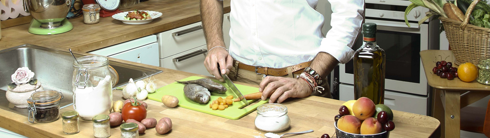QU'EST CE QU'UN DIÉTÉTICIEN?
C’est un professionnel de la santé, diplômé d’état, expert en nutrition.
Il vous aide à trouver le chemin de l’équilibre alimentaire par le biais de conseils personnalisés, d’astuces et de règles simples adaptées à chaque cas. Il établit avec vous votre bilan nutritionnel.
Le diététicien vous accompagne vers votre objectif en évitant le sentiment d’isolement, en limitant la frustration et le découragement, il optimise ainsi vos chances de réussite.
Un régime sans être accompagné par un professionnel de la nutrition est souvent inefficace voire même dangereux pour votre santé.
VOTRE DIÉTÉTICIEN
Je suis titulaire d’un diplôme de diététique depuis 2009. Pour vous aider à atteindre votre objectif dans les meilleures conditions, je vous reçois dans mon cabinet du 10ème arrondissement de Paris, ou je me déplace à votre domicile.
L’alimentation, la santé et le bien-être sont plus qu’une passion, c’est pour moi un véritable mode de vie.
On pourrait même parler d’héritage familial puisque ces valeurs m’ont été transmises par mon père, Marc Mességué, phytothérapeute et fondateur d’un centre de bien-être et santé en Italie. Mon grand père, Maurice Mességué, fut un des précurseur de la phytothérapie moderne.
Parce que les connaissances en matière d’alimentation et la recherche sont en perpétuelle évolution, je suis membre de l’AFDN (Association Française des Diététiciens Nutritionnistes), et à ce titre je respecte la charte du diététicien, tout en restant informé de l’actualité nutritionnelle et des recommandations alimentaires.(Consulter la charte).
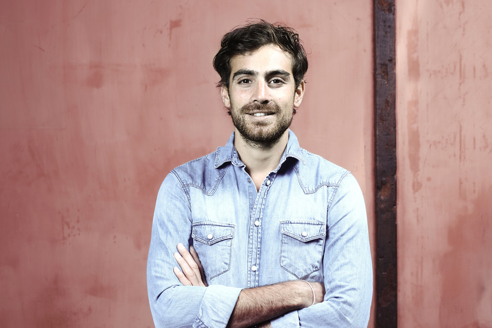DANS QUEL CAS?
- 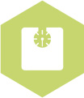
- 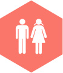
- 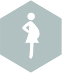
- 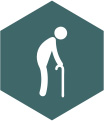
CONSULTATIONS
PREMIÉRE CONSULTATION
1h 70 eurosComprenant un bilan nutritionnel et une impédencemétrie (pesée technique). Le bilan nutritionnel à pour objectif, grâce à une enquête alimentaire, de mieux vous connaître, de déterminer vos besoins, vos habitudes alimentaires et vos attentes. Cette étape est indispensable pour atteindre vos objectifs.
Les mesures impédencemétriques permettent de faire un bilan précis de votre poids en dissociant le pourçentage de muscle, de graisse, d’eau et du squelette, calculant ainsi votre métabolisme de base.
A l’issue de cette première rencontre, vous repartirez avec votre bilan nutritionnel complet, et des objectifs à atteindre pour le prochain rendez-vous.
CONSULTATION DE SUIVI
1h 55 eurosComprenant un bilan nutritionnel et une impédencemétrie (pesée technique). La première consultation de suivi se fait entre 15 et 30 jours après le bilan nutritionnel. Elle permet de voir si les premiers objectifs ont été atteints, de répondre à vos questions et d’affiner les objectifs suivants.
Les autres consultations seront plus espacées selon vos besoins et vos envies. Lors d’une perte de poids, il est important d’être suivi jusqu’à l’autonomie nutritionnelle complète. Tout au long des consultations vous améliorerez vos habitudes pour atteindre un équilibre alimentaire et une hygiène de vie qui vous permettront d’éviter l’effet «yoyo».
La perte de poids sera progressive et durable en limitant la frustration et en n’écartant aucun aliment.
CONSULTATION À DOMICILE
1h 1ère 85 euros, les suivantes 65 eurosVous avez du mal à vous déplacer. Votre temps est précieux.
Vous n’avez pas envie de perdre du temps dans les transports ou les embouteillages.
Je me déplace pour répondre à vos demandes à Paris et en petite couronne.
Les consultations à domicile présentent de nombreux avantages. Outre le gain de temps, il sera plus facile pour moi d’analyser votre comportement alimentaire car vous pourrez me montrer ce que vous avez l’habitude de consommer. Si vous le souhaitez, nous pouvons examiner le contenu de vos placards et de votre réfrigérateur pour vous apprendre à reconnaître les aliments à privilégier. Je vous donnerai des astuces pour savoir les préparer, et nous établirons ensemble un programme personnalisé.
ATELIERS
ATELIER DE CUISINE
2h 140€Le menu est élaboré à l’avance selon vos goûts, vos envies et vos besoins.
La liste de course sera préparée. Vous avez le choix de faire vous même les courses ou que je les apporte le jour de l’atelier.

PRÉPARER UN MENU COMPLET ET DIÉTÉTIQUE
Préparation d’un menu simple pour 2 personnes : entrée + plat + dessert Menu prenant en compte le régime alimentaire du participant- 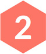
FAIRE MANGER DES LÉGUMES À VOS ENFANTS
Trucs et astuces autour de quelques plats de base. RÉALISER UN APÉRITIF DIÉTÉTIQUE
Préparation d’un menu simple pour 4 personnes- 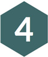
CUISINER DES DESSERTS ALLÉGÉS
Préparations de 2 ou 3 desserts pour 4/6 personnes
Cette liste n’est pas exhaustive !
Je peux répondre à des demandes particulières, si celle-ci restent dans le cadre de mes compétences.
Pour les plus pressés, un cours d’1h sur les même thématiques peut être envisagé. N’hésitez pas à me contacter.
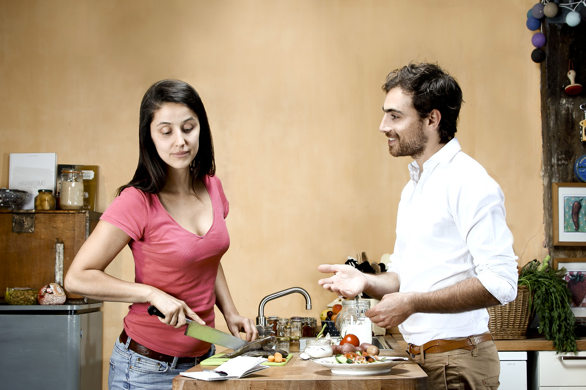ATELIER COURSE
1h30 100 euro
Vous ne savez pas vraiment comment faire vos courses.
Vous êtes perdu parmi la quantité toujours plus importante de produits.
Vous ne voulez plus tomber dans les pièges des produits alimentaires industriels.
Vous voulez choisir ce qui est le mieux pour vous.
Cet atelier est pour vous !Je vous accompagne dans le supermarché où vous avez vos habitudes. En vous aidant dans vos choix, je vous conseille sur l’ intérêt ou non des aliments choisis en fonction de vos goût et/ou de votre problématique.
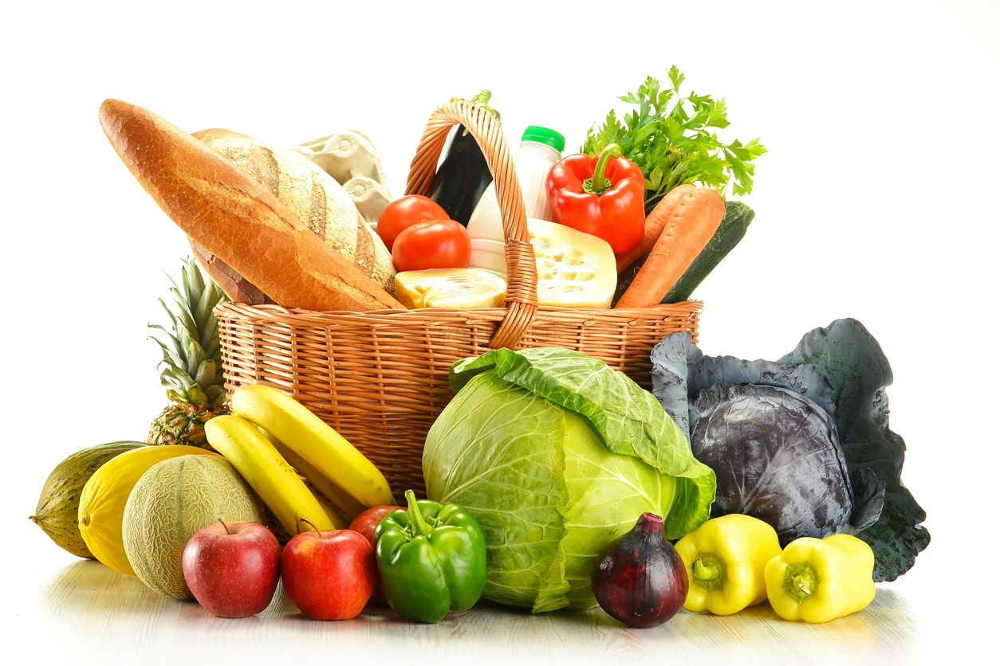TARIFS
PREMIÈRE CONSULTATION
70 euro
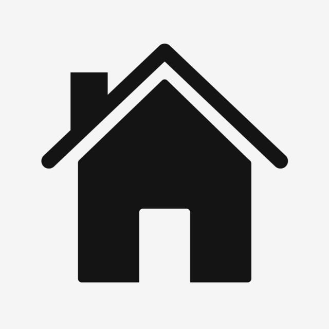 à domicile +10€CONSULTATION DE SUIVI
55 euro
à domicile +10€-
ATELIER CUISINE
140 euro
2h -
ATELIER COURSES
100 euro
1h30
20% de réduction est appliquée pour les consultations ayant lieu à Bordeaux